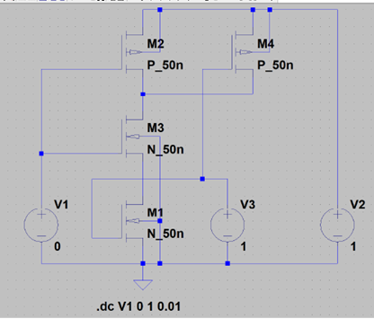
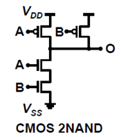
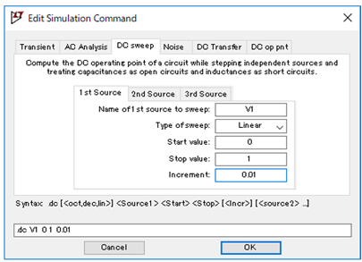
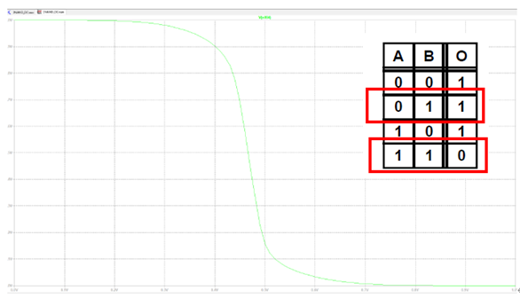
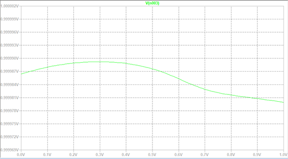

2NAND 回路の作成
回路図作成の参考
回路図はテキストを参考にして作成できますが、講義3の13ページを参考にすると、よりわかりやすく作成できます。講義で使用した回路図に基づいて設計を進めてください。
 MOS, NMOS の設定
- Model Name: P_50n (PMOS), N_50n (NMOS)
- Length (L): 50nm
- Width (W): 500nm
電源の設定
- V1: A入力、DC解析で0Vから 1V までスイープ
- V3: B入力、1V 固定
- V2: VDD 電源、1V 固定
シミュレーション設定
メニューの Simulate > Edit Simulation Cmd を開き、DC解析を設定してシミュレーションを実行します。
回路の保存
2NAND 回路も、回路図が完成した時点で必ず「ドキュメント > LTspice 実習フォルダ」に「2NAND」という名前で保存してください。
V3 (B入力)を1V固定し、V1 (A入力)を0~1V までスイープ
まず、B入力を1V に固定し、A入力を0V から 1V までスイープします。その結果、真理値表の赤枠で囲んだ通り、Aが0のとき出力は1、Aが1のとき出力は0となることが確認できます。
V3（B入力）を0V固定し、V1（A入力）を0～1Vまでスイープ
次に、B入力を0Vに固定し、A入力を0Vから1Vまでスイープします。この場合、出力波形が少し変な形に見えることがありますが、グラフの左側の数値に注目すると、Aが0のときもAが1のときも、出力は1になることがわかります。
